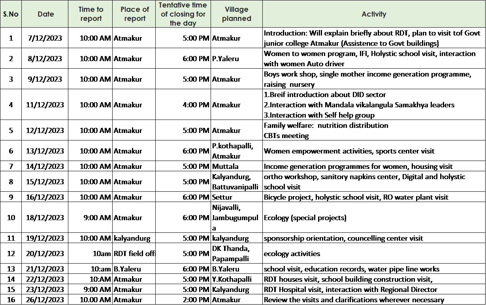

Internship Schedule - Atmakuru Group 2023

A team comprising Rajendra Kumar, B.M. Saswati, S.M. Abul Kalam, Pragya Paramita Das, Sneha Das, and Mohan Teja embarked on a comprehensive exploration of the villages in the Atmakuru and Kalyandurg areas. Our mission was not merely a cursory visit; rather, it entailed a meticulous evaluation of the implementation and effectiveness of various development schemes. This dedicated group approached the task with a collective commitment to gain insights into the ground realities, drawing upon data gleaned from extensive field studies. The team's methodology was both thorough and systematic. Each member was assigned specific sectors within the Rural Development Trust (RDT) based on their individual interests and expertise. This strategic allocation ensured that every facet of RDT's operations would be scrutinized and examined in detail. By leveraging a combination of focus groups and interviews, the team meticulously gathered information, ensuring a nuanced understanding of the unique challenges and opportunities inherent in each sector.
The diversity within the team, both in terms of expertise and perspective, contributed to a holistic assessment of RDT's initiatives. Rajendra Kumar, B.M. Saswati, S.M. Abul Kalam, Pragya Paramita Das, Sneha Das, and Mohan Teja brought our unique skills and insights to the table, enriching the overall evaluation process. Our collective experiences and diverse viewpoints facilitated a comprehensive examination of the development schemes, shedding light on their impact at the grassroots level. The focus on sector-specific interests within the RDT further enhanced the depth of the analysis. By delving into the intricacies of each sector, the team was able to uncover nuances that might have otherwise gone unnoticed. Whether it was healthcare, education, economic empowerment, or other areas, each team member's specialized focus allowed for a granular examination of the challenges and successes within respective assigned sector. A critical component of the team's approach was the utilization of qualitative research methods. Through focused group discussions and one-on-one interviews, they not only gathered quantitative data but also unearthed qualitative insights that provided a more holistic understanding of the local dynamics. This qualitative richness added depth to the team's deductions, allowing for a nuanced interpretation of the field study data.